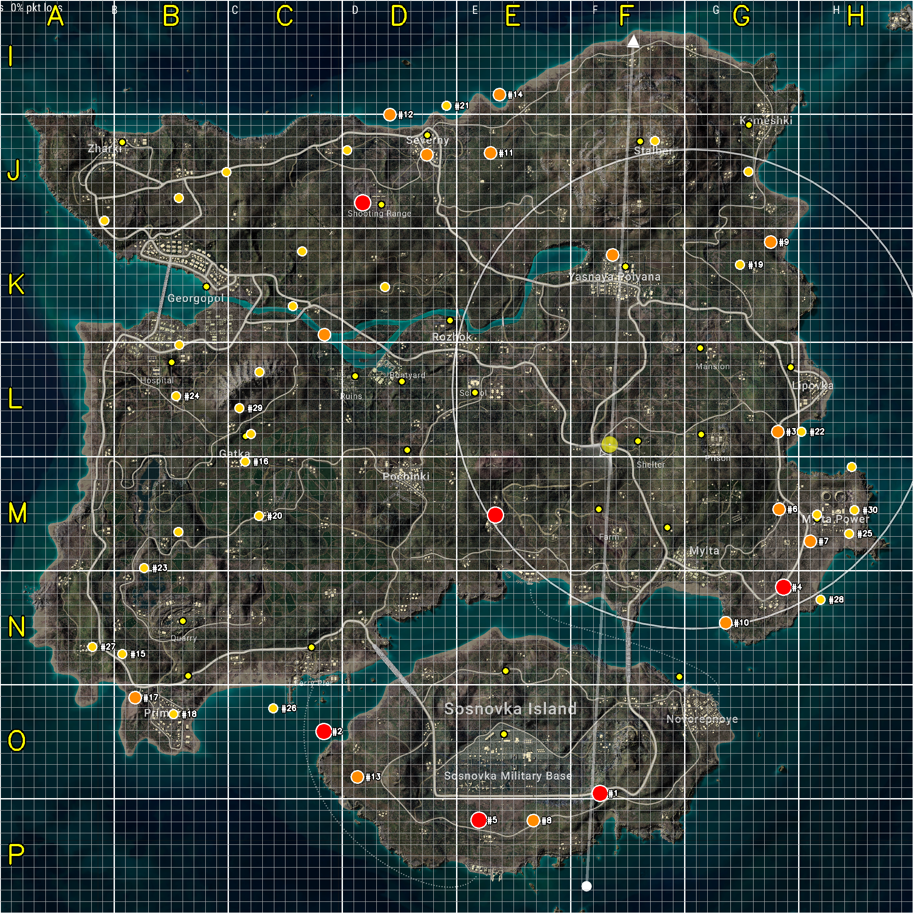
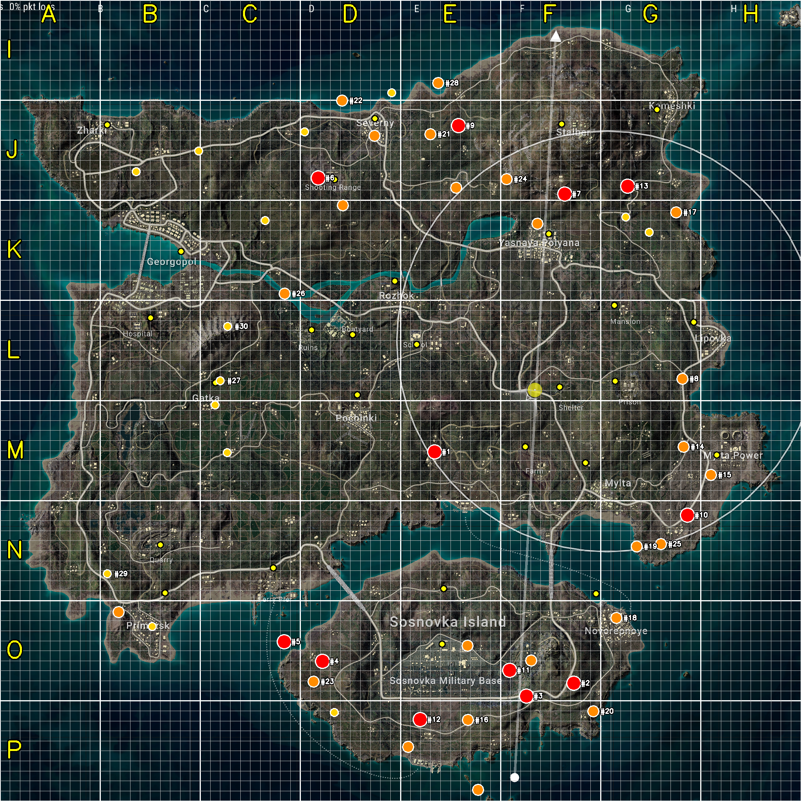

| # | 좌표 | 마커 | 매치 | 영상 | tier | 3패스 통과 | 가까운 도시 | 거리 |
|---|---|---|---|---|---|---|---|---|
| 1 | (0.657, 0.869) | 570 | 41 | 24 | S | 3 | MilBase | 991m |
| 2 | (0.355, 0.801) | 265 | 42 | 30 | S | 3 | Ferry | 745m |
| 3 | (0.852, 0.473) | 483 | 25 | 25 | A | 3 | Lipovka | 579m |
| 4 | (0.858, 0.643) | 266 | 30 | 26 | S | 3 | MyltaPower | 669m |
| 5 | (0.525, 0.898) | 139 | 33 | 20 | S | 3 | MilBase | 784m |
| 6 | (0.854, 0.558) | 212 | 26 | 22 | A | 3 | MyltaPower | 341m |
| 7 | (0.888, 0.593) | 429 | 18 | 18 | A | 3 | MyltaPower | 208m |
| 8 | (0.584, 0.899) | 234 | 23 | 23 | A | 3 | MilBase | 801m |
| 9 | (0.844, 0.265) | 260 | 20 | 20 | A | 3 | Kameshki | 1042m |
| 10 | (0.795, 0.682) | 158 | 23 | 21 | A | 3 | Novorepnoye | 622m |
| 11 | (0.537, 0.168) | 128 | 23 | 17 | A | 3 | Severny | 575m |
| 12 | (0.427, 0.125) | 204 | 16 | 16 | A | 3 | Severny | 373m |
| 13 | (0.391, 0.851) | 187 | 16 | 16 | A | 3 | Ferry | 1205m |
| 14 | (0.547, 0.103) | 106 | 18 | 18 | A | 3 | Severny | 726m |
| 15 | (0.134, 0.716) | 172 | 14 | 14 | B | 3 | Quarry | 604m |
| 16 | (0.268, 0.506) | 135 | 14 | 14 | B | 3 | Gatka | 220m |
| 17 | (0.148, 0.764) | 112 | 15 | 15 | A | 3 | Primorsk | 501m |
| 18 | (0.190, 0.782) | 138 | 12 | 12 | B | 3 | Primorsk | 360m |
| 19 | (0.810, 0.290) | 106 | 13 | 12 | B | 3 | Mansion | 806m |
| 20 | (0.284, 0.565) | 84 | 14 | 14 | B | 3 | Gatka | 708m |
| 21 | (0.489, 0.116) | 93 | 10 | 10 | B | 3 | Severny | 308m |
| 22 | (0.878, 0.473) | 111 | 8 | 8 | B | 3 | Lipovka | 574m |
| 23 | (0.158, 0.622) | 98 | 8 | 8 | B | 3 | Quarry | 571m |
| 24 | (0.193, 0.434) | 89 | 8 | 8 | B | 3 | Hospital | 296m |
| 25 | (0.930, 0.585) | 87 | 8 | 8 | B | 3 | MyltaPower | 308m |
| 26 | (0.299, 0.776) | 75 | 8 | 8 | B | 3 | Ferry | 631m |
| 27 | (0.101, 0.709) | 43 | 10 | 10 | B | 3 | Quarry | 823m |
| 28 | (0.899, 0.657) | 112 | 6 | 6 | B | 3 | MyltaPower | 711m |
| 29 | (0.262, 0.447) | 36 | 9 | 9 | B | 3 | Gatka | 251m |
| 30 | (0.936, 0.559) | 78 | 6 | 6 | B | 3 | MyltaPower | 336m |
| # | 좌표 | 마커 | 매치 | 영상 | tier | 3패스 통과 | 가까운 도시 | 거리 |
|---|---|---|---|---|---|---|---|---|
| 1 | (0.543, 0.564) | 47684 | 177 | 55 | S | 1 | Farm | 907m |
| 2 | (0.716, 0.853) | 307 | 60 | 26 | S | 0 | Novorepnoye | 923m |
| 3 | (0.657, 0.869) | 570 | 41 | 24 | S | 3 | MilBase | 991m |
| 4 | (0.403, 0.826) | 297 | 41 | 16 | S | 0 | Ferry | 1055m |
| 5 | (0.355, 0.801) | 265 | 42 | 30 | S | 3 | Ferry | 745m |
| 6 | (0.397, 0.222) | 287 | 36 | 28 | S | 1 | Shooting | 166m |
| 7 | (0.705, 0.242) | 223 | 39 | 28 | S | 0 | Yasnaya | 432m |
| 8 | (0.852, 0.473) | 483 | 25 | 25 | A | 3 | Lipovka | 579m |
| 9 | (0.573, 0.157) | 147 | 42 | 24 | S | 0 | Severny | 840m |
| 10 | (0.858, 0.643) | 266 | 30 | 26 | S | 3 | MyltaPower | 669m |
| 11 | (0.636, 0.837) | 112 | 39 | 19 | S | 0 | MilBase | 723m |
| 12 | (0.525, 0.898) | 139 | 33 | 20 | S | 3 | MilBase | 784m |
| 13 | (0.784, 0.232) | 140 | 32 | 23 | S | 0 | Kameshki | 816m |
| 14 | (0.854, 0.558) | 212 | 26 | 22 | A | 3 | MyltaPower | 341m |
| 15 | (0.888, 0.593) | 429 | 18 | 18 | A | 3 | MyltaPower | 208m |
| 16 | (0.584, 0.899) | 234 | 23 | 23 | A | 3 | MilBase | 801m |
| 17 | (0.844, 0.265) | 260 | 20 | 20 | A | 3 | Kameshki | 1042m |
| 18 | (0.769, 0.772) | 101 | 29 | 16 | A | 0 | Novorepnoye | 317m |
| 19 | (0.795, 0.682) | 158 | 23 | 21 | A | 3 | Novorepnoye | 622m |
| 20 | (0.741, 0.888) | 113 | 25 | 8 | A | 0 | Novorepnoye | 1176m |
| 21 | (0.537, 0.168) | 128 | 23 | 17 | A | 3 | Severny | 575m |
| 22 | (0.427, 0.125) | 204 | 16 | 16 | A | 3 | Severny | 373m |
| 23 | (0.391, 0.851) | 187 | 16 | 16 | A | 3 | Ferry | 1205m |
| 24 | (0.632, 0.224) | 71 | 25 | 19 | A | 0 | Yasnaya | 689m |
| 25 | (0.825, 0.679) | 74 | 23 | 20 | A | 0 | Novorepnoye | 817m |
| 26 | (0.355, 0.367) | 96 | 20 | 18 | A | 1 | Ruins | 452m |
| 27 | (0.275, 0.475) | 192 | 14 | 14 | B | 2 | Gatka | 51m |
| 28 | (0.547, 0.103) | 106 | 18 | 18 | A | 3 | Severny | 726m |
| 29 | (0.134, 0.716) | 172 | 14 | 14 | B | 3 | Quarry | 604m |
| 30 | (0.284, 0.408) | 191 | 13 | 13 | B | 1 | Gatka | 577m |